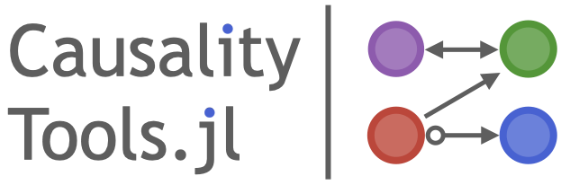

CausalityTools — ModuleCausalityTools


CausalityTools.jl is a package for quantifying associations and dynamical coupling between datasets, independence testing and causal inference.
All further information is provided in the documentation, which you can either find online or build locally by running the docs/make.jl file.
Key features
- Association measures from conventional statistics, information theory and dynamical systems theory, for example distance correlation, mutual information, transfer entropy, convergent cross mapping and a lot more!
- A dedicated API for independence testing, which comes with automatic compatibility with every measure-estimator combination you can think of. For example, we offer the generic
SurrogateTest, which is fully compatible with TimeseriesSurrogates.jl, and theLocalPermutationTestfor conditional indepencence testing. - A dedicated API for causal network inference based on these measures and independence tests.
Installation
To install the package, run import Pkg; Pkg.add("CausalityTools").
Goals
Causal inference, and quantification of association in general, is fundamental to most scientific disciplines. There exists a multitude of bivariate and multivariate association measures in the scientific literature. However, beyond the most basic measures, most methods aren't readily available for practical use. Most scientific papers don't provide code, which makes reproducing them difficult or impossible, without investing significant time and resources into deciphering and understanding the original papers to the point where an implementation is possible. To make reliable inferences, proper independence tests are also crucial.
Our main goal with this package is to provide an easily extendible library of association measures, a as-complete-as-possible set of their estimators. We also want to lower the entry-point to the field of association quantification, independence testing and causal inference, by providing well-documented implementations of literature methods with runnable code examples.
The core function for quantifying associations is independence, which performs either a parametric or nonparametric (conditional) IndependenceTest using some form of association measure. These tests, in turn, can be used with some GraphAlgorithm and infer_graph to infer causal graphs.
Input data
Input data for CausalityTools are given as:
- Univariate timeseries, which are given as standard Julia
Vectors. - Multivariate timeseries, StateSpaceSets, or state space sets, which are given as
StateSpaceSets. Many methods convert timeseries inputs toStateSpaceSetfor faster internal computations. - Categorical data can be used with
ContingencyMatrixto compute various information theoretic measures and is represented using any iterable whose elements can be any arbitrarily complex data type (as long as it's hashable), for exampleVector{String},{Vector{Int}}, orVector{Tuple{Int, String}}.
StateSpaceSets.StateSpaceSet — TypeStateSpaceSet{D, T} <: AbstractStateSpaceSet{D,T}A dedicated interface for sets in a state space. It is an ordered container of equally-sized points of length D. Each point is represented by SVector{D, T}. The data are a standard Julia Vector{SVector}, and can be obtained with vec(ssset::StateSpaceSet). Typically the order of points in the set is the time direction, but it doesn't have to be.
When indexed with 1 index, StateSpaceSet is like a vector of points. When indexed with 2 indices it behaves like a matrix that has each of the columns be the timeseries of each of the variables. When iterated over, it iterates over its contained points. See description of indexing below for more.
StateSpaceSet also supports almost all sensible vector operations like append!, push!, hcat, eachrow, among others.
Description of indexing
In the following let i, j be integers, typeof(X) <: AbstractStateSpaceSet and v1, v2 be <: AbstractVector{Int} (v1, v2 could also be ranges, and for performance benefits make v2 an SVector{Int}).
X[i] == X[i, :]gives theith point (returns anSVector)X[v1] == X[v1, :], returns aStateSpaceSetwith the points in those indices.X[:, j]gives thejth variable timeseries (or collection), asVectorX[v1, v2], X[:, v2]returns aStateSpaceSetwith the appropriate entries (first indices being "time"/point index, while second being variables)X[i, j]value of thejth variable, at theith timepoint
Use Matrix(ssset) or StateSpaceSet(matrix) to convert. It is assumed that each column of the matrix is one variable. If you have various timeseries vectors x, y, z, ... pass them like StateSpaceSet(x, y, z, ...). You can use columns(dataset) to obtain the reverse, i.e. all columns of the dataset in a tuple.
Pull requests and issues
This package has been and is under heavy development. Don't hesitate to submit an issue if you find something that doesn't work or doesn't make sense, or if there's some functionality that you're missing. Pull requests are also very welcome!
Maintainers and contributors
The CausalityTools.jl software is maintained by Kristian Agasøster Haaga, who also curates and writes this documentation. Significant contributions to the API and documentation design has been made by George Datseris, which also co-authors ComplexityMeasures.jl, which we develop in tandem with this package.
A complete list of contributors to this repo are listed on the main Github page. Some important contributions are:
- Norbert Genera contributed bug reports and investigations that led to subsequent improvements for the pairwise asymmetric inference algorithm and an improved cross mapping API.
- David Diego's contributions were invaluable in the initial stages of development. His MATLAB code provided the basis for several transfer entropy methods and binning-related code.
- George Datseris also ported KSG1 and KSG2 mutual information estimators to Neighborhood.jl.
- Bjarte Hannisdal provided tutorials for mutual information.
- Tor Einar Møller contributed to cross-mapping methods in initial stages of development.
Many individuals has contributed code to other packages in the JuliaDynamics ecosystem which we use here. Contributors are listed in the respective GitHub repos and webpages.
Related packages
- TransferEntropy.jl previously provided mutual infromation and transfer entropy estimators. These have been re-implemented from scratch and moved here.